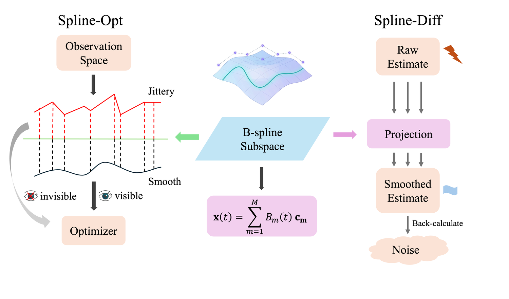
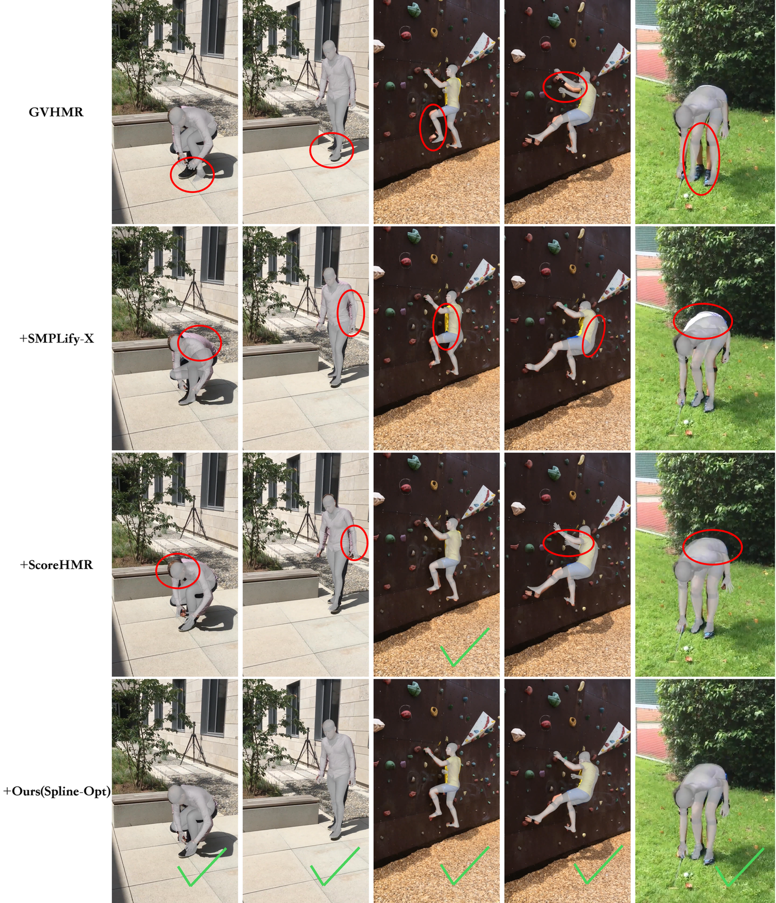

Abstract
SplineHMR is a simple temporal prior for refining SMPL/SMPL-X motion sequences. Instead of optimizing every frame independently, it represents pose and camera corrections as smooth B-spline trajectories. This makes refinement less prone to frame-to-frame jitter while still allowing the mesh to move toward better image evidence.
We use the same prior in two complementary settings. Spline-Opt performs direct test-time optimization in the B-spline control space. Spline-Diff inserts a B-spline projection step into ScoreHMR's diffusion sampling process. Both variants are designed to refine existing human mesh recovery results rather than replace the upstream video regressor.
What does SplineHMR do?
SplineHMR takes a per-frame or video-based human mesh estimate as input and refines the body motion under a sequence-level smoothness model. The key idea is to optimize a small number of B-spline control points, then decode them into dense frame-wise corrections for the body pose and camera. Because neighboring frames share control points, the refinement naturally favors coherent motion instead of isolated per-frame fixes.
This is useful when a strong video HMR method already gives plausible global motion, but local image alignment or body pose can still be improved. In that regime, unconstrained test-time fitting may introduce jitter, while overly strong temporal smoothing may oversmooth the motion. SplineHMR aims for the middle ground: better fitting with temporally structured updates.
Demo teaser
The red mesh shows the input before optimization; the green mesh shows the refined result after Spline-Opt. In the overlay, the refined motion keeps the temporal structure of the input sequence while reducing visible misalignment.
Method overview
SplineHMR changes the variables exposed to refinement: instead of frame-wise independent updates, correction trajectories are represented by smooth B-spline control points. This makes the prior representation-level and easy to attach to different refinement backends.
Control-space optimization
Fits bounded B-spline corrections with LBFGS. The optimizer updates compact control points rather than every frame, improving reprojection alignment while discouraging jittery frame-wise corrections.
Diffusion-time projection
Projects DDIM clean-state estimates onto a B-spline temporal subspace and softly blends them back into ScoreHMR sampling, turning the temporal prior into a diffusion-time constraint.



Qualitative results
SplineHMR is designed to improve the alignment-stability trade-off for SMPL sequence refinement. The qualitative examples compare the input regressor and common refinement baselines with our B-spline constrained refinement.

Video
Citation
If you find SplineHMR useful, please cite:
@inproceedings{li2026splinehmr,
title = {SplineHMR: A Universal B-spline Prior for Temporally Stable SMPL Refinement},
author = {Li, Tengwei and Li, Jiaen and Zhang, He and Yu, Tao and Ji, Mengqi},
booktitle = {Proceedings of the 34th ACM International Conference on Multimedia (MM '26)},
year = {2026},
address = {Rio de Janeiro, Brazil},
publisher = {Association for Computing Machinery},
doi = {10.1145/3767308.3835749},
isbn = {979-8-4007-2213-4/2026/11}
}